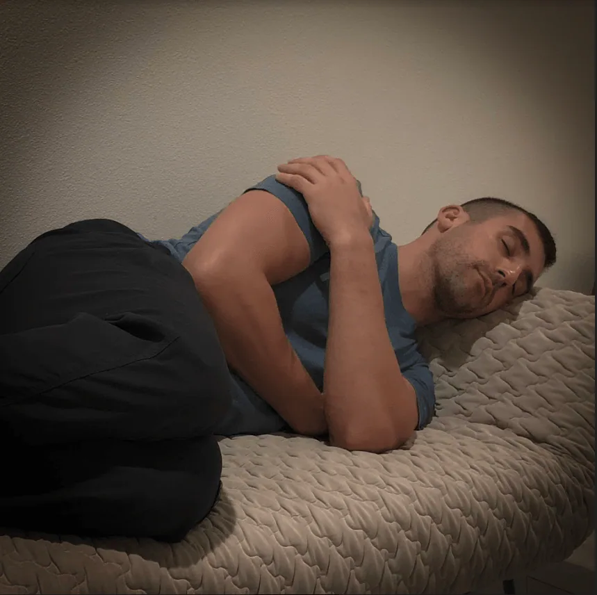
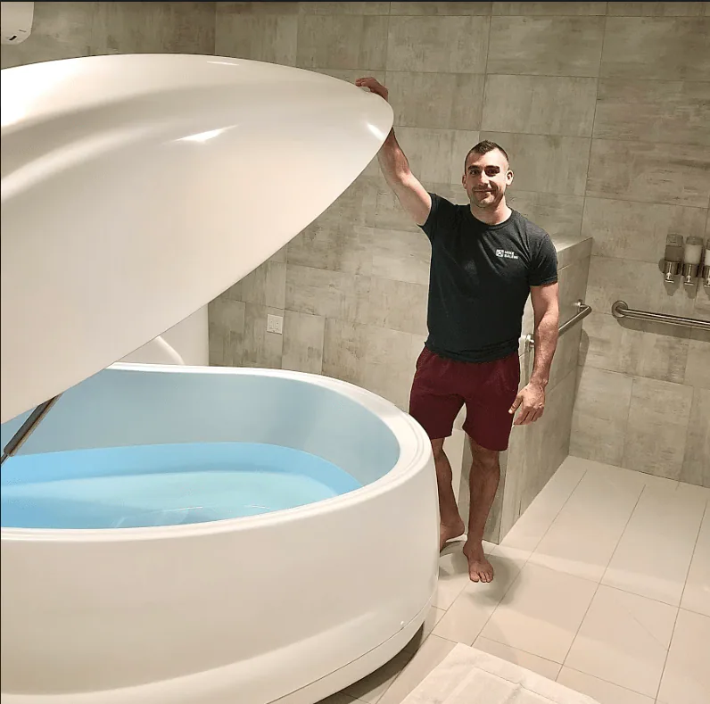

Hi {first_name},
Since returning home from Kuwait last week, the topic of travel and jet lag has been at the forefront of my mind.
If you’ve done some traveling, you can relate when I say, “jet lag is seriously no fun.”
What are some common symptoms of jet lag?
- Disturbed sleep
- Daytime fatigue
- Difficulty concentrating
- Stomach problems
- Mood changes
Any time we travel across time zones, we experience some disruption in our body’s natural 24 hours circadian rhythm cycle and internal processes. Often times it can be quite tough and a longer process than we’d hope to recover from these challenges.

I’ve created a series of tips that you can use the next time you travel to help mitigate this:
- Avoid airplane food
- Explore fasting during a portion of your travel day
a) If you are accustomed to fasting, and typically have stable blood sugar levels, explore fasting on the flight or travel day. When you arrive at your destination, try to get on the new time zone’s schedule of eating for your next meal. For example, if you land at 10 pm, skip dinner and start your meals again with breakfast the following day.
- Perform morning cardio
a) If there’s a cardio machine in your hotel, or the weather is nice (best option), go for a 15-20 jog. This will help raise your cortisol levels, so it's more in sync with the rhythm of new time zone.
- Take 3 minute+ cold showers
a) Not only will this wake you up ; ) but it can help to balance your hormonal system.
- Peppermint oil in the morning
a) An uplifting and energizing essential oil you can place behind your neck and breathe in deeply for five breaths (I found out about Essential Oil Wizardry from the Living 4D Podcast with Paul Chek and Dr. Nick Berry and I am loving it).
- Lavender oil in the evening
a) Place behind your neck, and on the soles of your feet
- Camomile tea before bed
a) Settles the stomach and is excellent for calming the body
- Sauna the day you arrive
a) If you can locate a sauna, aim to get a good 20-30 minute sweat in and enjoy the relaxation, detoxification, and quiet space to enjoy meditation or a gentle stretching routine.
- Perform a 5-10 minute morning or evening meditation outside barefoot
a) This will help ground and connect you to the new environment as you relax your mind from the busy travel day.
- Stay hydrated
a) Aim to drink ½ your body weight in ounces of water at a minimum, and remember to drink on the plane.
- Schedule a float (sensory deprivation tank) session when you arrive home
a) One of the very best tools for supporting deep rest and recovery following travel is a float. Schedule a 60-minute session, and when you do, please let me know afterward how it went!
 Post-flight float at Balance Float in Redwood City, CA
Bonus Tip - there has been one supplement that was recently recommended to me by a close friend since returning home from Kuwait. Being very selective when it comes to supplements, I am quite happy with how it's been helping me recover from jet lag this past week. You can find it easily on Amazon - H2 Elite. The company that makes it is Quicksilver Scientific.
I hope you enjoyed these tips and give a few a try the next time you travel. Feel free to share with a friend or family member whom could benefit : )
Wishing you a great day, Mike
Reference: https://www.mayoclinic.org/diseases-conditions/jet-lag/symptoms-causes/syc-20374027
|